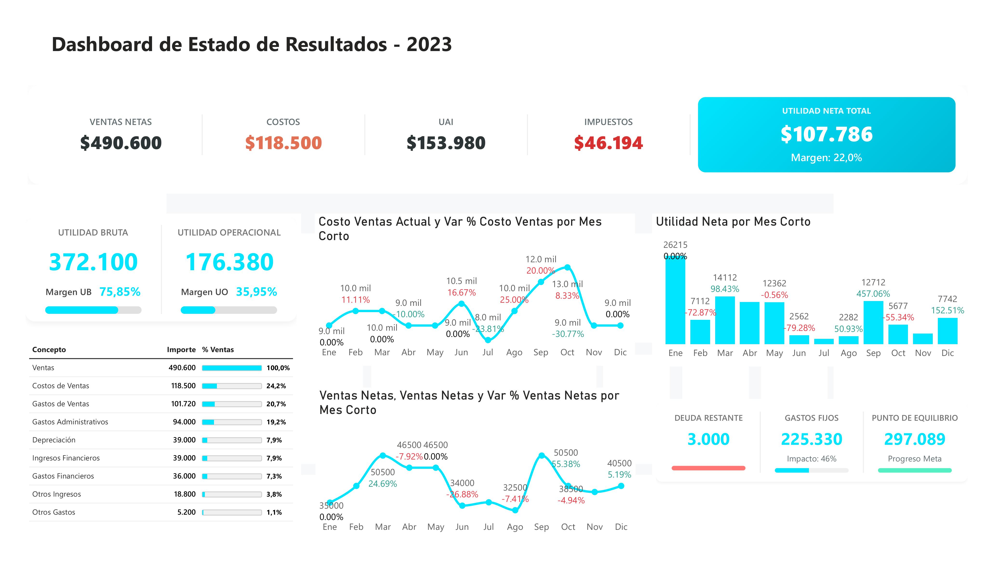
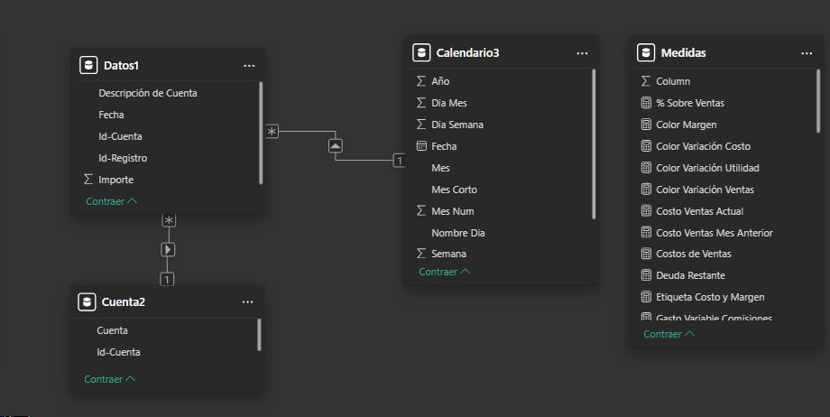

Transformación Digital del Reporte de Resultados: Un Enfoque en Rentabilidad
📋 Resumen del Proyecto
Este proyecto consistió en el diseño e implementación de un sistema de monitoreo financiero para reemplazar procesos manuales de consolidación de datos. La solución centraliza las transacciones contables en un modelo de datos dinámico que permite a la gerencia evaluar la salud financiera de la organización en tiempo real.
La organización dependía de reportes estáticos donde era difícil comparar el impacto de los gastos individuales frente a los ingresos totales. Se necesitaba una herramienta que no solo sumara valores, sino que proporcionara contexto relativo sobre las ventas totales.
🖼️ Interfaz de Usuario y Experiencia (UX)
El diseño del dashboard prioriza la densidad de información sin sacrificar la claridad. Se implementaron visuales personalizados para permitir una comparación visual inmediata de las cuentas contables.

Para maximizar el espacio, utilicé una medida DAX que renderiza código HTML/SVG dinámico, permitiendo insertar gráficos tipo Lollipop directamente en las tablas, manteniendo una fuente de 10pt legible y profesional.
🏗️ Modelado de Datos
La arquitectura de este proyecto se fundamenta en un Esquema en Estrella (Star Schema), diseñado para optimizar el rendimiento de las consultas y garantizar la integridad de los cálculos financieros complejos.
Componentes de la Arquitectura
- Tabla de Hechos (Fact Table): Almacena los registros transaccionales y montos financieros.
- Dimensión de Cuentas (
Cuenta2): Actúa como el catálogo maestro para jerarquizar conceptos (Ventas, Gastos, Costos). - Dimensión Calendario: Habilita funciones de Time Intelligence para comparativas temporales.

🛠️ Desarrollo de Lógica (DAX)
A continuación, se presentan las medidas clave que permiten el dinamismo del reporte:
1. Cálculo de Incidencia sobre Ventas
Esta medida asegura que el denominador se mantenga constante sin importar el filtro aplicado a las cuentas individuales en la fila.
% Sobre Ventas =
VAR IngresosTotales =
CALCULATE(
[Total Importe],
'Cuenta2'[Tipo] = "Ventas",
ALLSELECTED('Cuenta2')
)
RETURN
DIVIDE([Total Importe], IngresosTotales, 0)2. Soporte Visual (Lollipop Chart)
Lógica utilizada para determinar el ancho dinámico del indicador visual dentro de la tabla HTML:
Ancho Barra =
VAR Porcentaje = [% Sobre Ventas]
RETURN
IF(Porcentaje > 1, 100, Porcentaje * 100)🚀 Impacto del Proyecto
- Automatización: Eliminación del tiempo dedicado a la creación manual de reportes.
- Visibilidad: Identificación inmediata de variaciones atípicas en los gastos operativos.
- Escalabilidad: El modelo integra nuevas cuentas contables de forma automática.